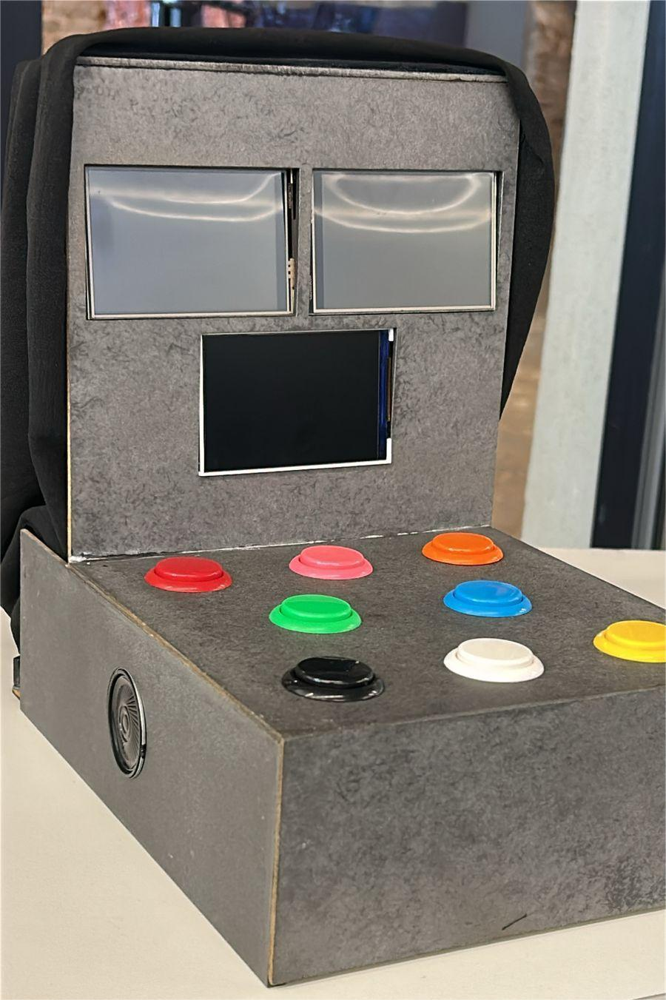

Animal Quest: Um Jogo para Inclusão
Integrantes do Grupo
- Bernardo Alencar
- Bruno Augusto
- Celina Barbosa
- Danilo Duleba
- Diego Maximo
- Felipe Lemos
- Matheus Fialho
- Maria Mariana
- Naiany Jardim
- Natan Luis
Foto do Projeto
Sobre o Projeto
O Animal Quest é um jogo interativo multisensorial feito para pessoas com síndrome de Down. Foi feita uma longa pesquisa sobre as necessidades de pessoas com deficiências intelectuais, assim desenvolvemos o Animal Quest para o auxílio cognitivo dessas pessoas.
Site Oficial do Animal Quest
Acesse o site oficial do Animal Quest para saber mais sobre o projeto.
Visitar site do Animal QuestCUP- Cooking under pressure
Integrantes do Grupo
- Arthur Reis
- Danilo Duleba
- Filipe Correia
Sobre o CUP
O CUP foi desenvolvido na plataforma no-code chamada Bitsy. No jogo, seu objetivo é encontrar ingredientes escondidos para criar uma receita, enfrentando desafios e explorando um ambiente interativo.
Jogue o CUP no itch.io